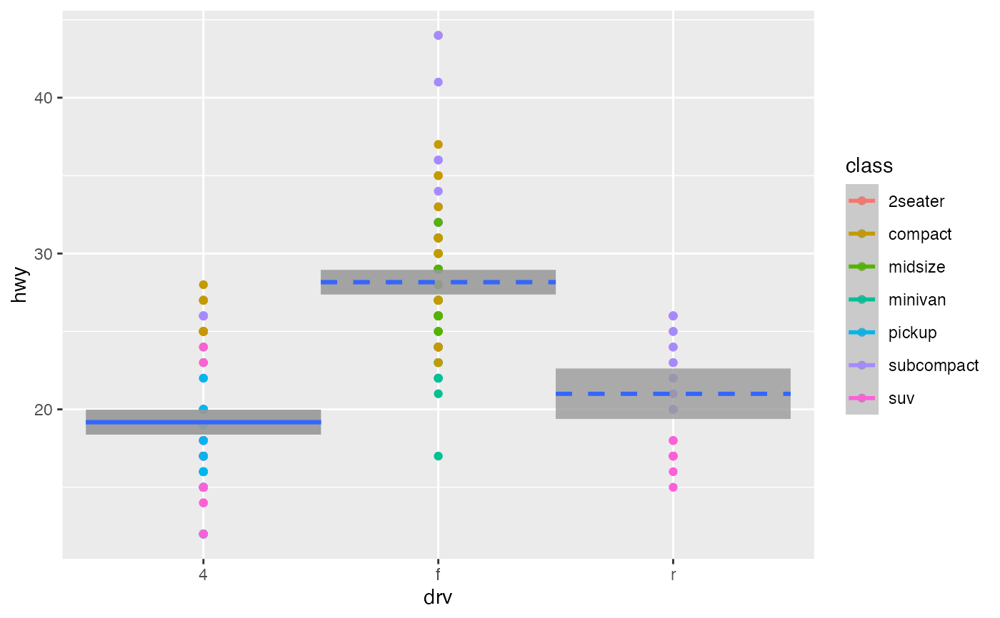

Regression model with one categorical explanatory/predictor variable
Source:R/geom_categorical_model.R
geom_categorical_model.Rdgeom_categorical_model() fits a regression model using the categorical
x axis as the explanatory variable, and visualizes the model's fitted values
as piece-wise horizontal line segments. Confidence interval bands can be
included in the visualization of the model. Like geom_parallel_slopes(),
this function has the same nature as geom_smooth() from
the ggplot2 package, but provides functionality that geom_smooth()
currently doesn't have. When using a categorical predictor variable,
the intercept corresponds to the mean for the baseline group, while
coefficients for the non-baseline groups are offsets from this baseline.
Thus in the visualization the baseline for comparison group's median is
marked with a solid line, whereas all offset groups' medians are marked with
dashed lines.
Usage
geom_categorical_model(
mapping = NULL,
data = NULL,
position = "identity",
...,
se = TRUE,
level = 0.95,
na.rm = FALSE,
show.legend = NA,
inherit.aes = TRUE
)Arguments
- mapping
Set of aesthetic mappings created by
aes(). If specified andinherit.aes = TRUE(the default), it is combined with the default mapping at the top level of the plot. You must supplymappingif there is no plot mapping.- data
The data to be displayed in this layer. There are three options:
If
NULL, the default, the data is inherited from the plot data as specified in the call toggplot().A
data.frame, or other object, will override the plot data. All objects will be fortified to produce a data frame. Seefortify()for which variables will be created.A
functionwill be called with a single argument, the plot data. The return value must be adata.frame, and will be used as the layer data. Afunctioncan be created from aformula(e.g.~ head(.x, 10)).- position
A position adjustment to use on the data for this layer. This can be used in various ways, including to prevent overplotting and improving the display. The
positionargument accepts the following:The result of calling a position function, such as
position_jitter(). This method allows for passing extra arguments to the position.A string naming the position adjustment. To give the position as a string, strip the function name of the
position_prefix. For example, to useposition_jitter(), give the position as"jitter".For more information and other ways to specify the position, see the layer position documentation.
- ...
Other arguments passed on to
layer()'sparamsargument. These arguments broadly fall into one of 4 categories below. Notably, further arguments to thepositionargument, or aesthetics that are required can not be passed through.... Unknown arguments that are not part of the 4 categories below are ignored.Static aesthetics that are not mapped to a scale, but are at a fixed value and apply to the layer as a whole. For example,
colour = "red"orlinewidth = 3. The geom's documentation has an Aesthetics section that lists the available options. The 'required' aesthetics cannot be passed on to theparams. Please note that while passing unmapped aesthetics as vectors is technically possible, the order and required length is not guaranteed to be parallel to the input data.When constructing a layer using a
stat_*()function, the...argument can be used to pass on parameters to thegeompart of the layer. An example of this isstat_density(geom = "area", outline.type = "both"). The geom's documentation lists which parameters it can accept.Inversely, when constructing a layer using a
geom_*()function, the...argument can be used to pass on parameters to thestatpart of the layer. An example of this isgeom_area(stat = "density", adjust = 0.5). The stat's documentation lists which parameters it can accept.The
key_glyphargument oflayer()may also be passed on through.... This can be one of the functions described as key glyphs, to change the display of the layer in the legend.
- se
Display confidence interval around model lines?
TRUEby default.- level
Level of confidence interval to use (0.95 by default).
- na.rm
If
FALSE, the default, missing values are removed with a warning. IfTRUE, missing values are silently removed.- show.legend
logical. Should this layer be included in the legends?
NA, the default, includes if any aesthetics are mapped.FALSEnever includes, andTRUEalways includes. It can also be a named logical vector to finely select the aesthetics to display.- inherit.aes
If
FALSE, overrides the default aesthetics, rather than combining with them. This is most useful for helper functions that define both data and aesthetics and shouldn't inherit behaviour from the default plot specification, e.g.borders().
Examples
library(dplyr)
#>
#> Attaching package: ‘dplyr’
#> The following objects are masked from ‘package:stats’:
#>
#> filter, lag
#> The following objects are masked from ‘package:base’:
#>
#> intersect, setdiff, setequal, union
library(ggplot2)
p <- ggplot(mpg, aes(x = drv, y = hwy)) +
geom_point() +
geom_categorical_model()
p
# In the above visualization, the solid line corresponds to the mean of 19.2
# for the baseline group "4", whereas the dashed lines correspond to the
# means of 28.19 and 21.02 for the non-baseline groups "f" and "r" respectively.
# In the corresponding regression table however the coefficients for "f" and "r"
# are presented as offsets from the mean for "4":
model <- lm(hwy ~ drv, data = mpg)
get_regression_table(model)
#> # A tibble: 3 × 7
#> term estimate std_error statistic p_value lower_ci upper_ci
#> <chr> <dbl> <dbl> <dbl> <dbl> <dbl> <dbl>
#> 1 intercept 19.2 0.404 47.5 0 18.4 20.0
#> 2 drv-f 8.99 0.567 15.9 0 7.87 10.1
#> 3 drv-r 1.82 0.913 2.00 0.047 0.026 3.62
# You can use different colors for each categorical level
p %+% aes(color = drv)
#> Warning: <ggplot> %+% x was deprecated in ggplot2 4.0.0.
#> ℹ Please use <ggplot> + x instead.
# But mapping the color aesthetic doesn't change the model that is fit
p %+% aes(color = class)
